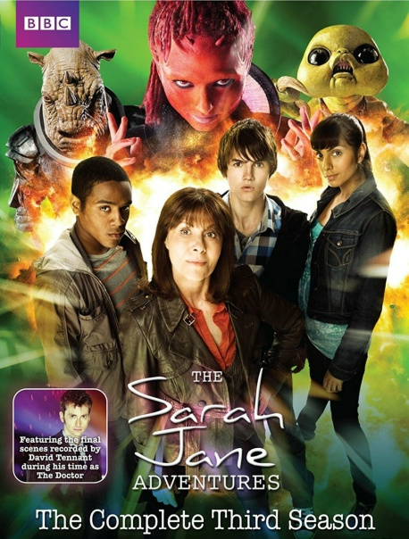

← Каталог портала

1-2. Пленник джудуна (Prisoner of the Judoon)
3-4. Сумасшедшая на чердаке (The Mad Woman in the Attic)
5-6. Свадьба Сары Джейн (The Wedding of Sarah Jane Smith)
7-8. Вечная ловушка (The Eternity Trap)
9-10. Месть Моны Лизы (Mona Lisa's Revenge)
11-12. Дар (The Gift)
1 сезон (2007) ||| 2 сезон (2008)
3 сезон (2009) ||| 4 сезон (2010)
5 сезон (2011)